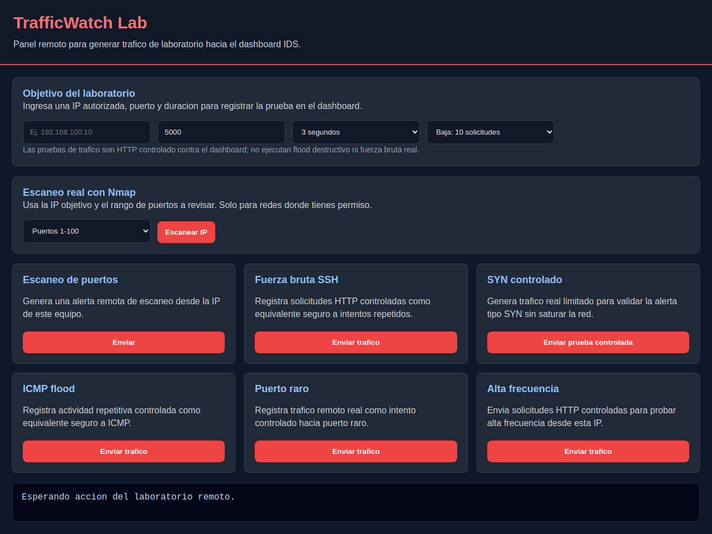
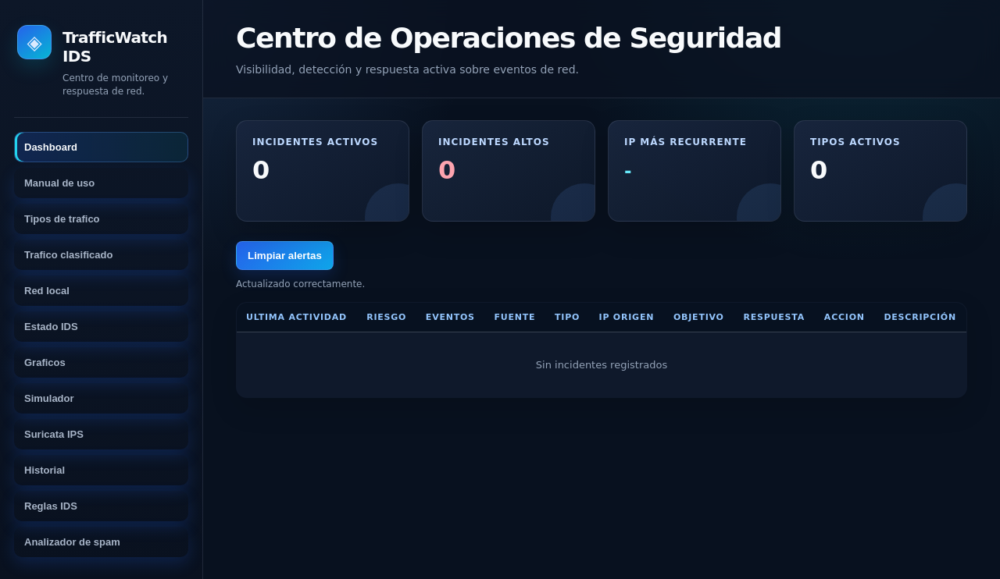

Pruebas de Interfaz - TrafficWatch IDS
Validacion automatizada con Playwright sobre el dashboard principal y el laboratorio web controlado.
2Total
2Aprobadas
0Fallidas / errores
0Omitidas
AprobadoEstado
Casos ejecutados
| Modulo | Prueba | Resultado | Tiempo |
|---|---|---|---|
| tests_ui.test_dashboard_ui | test_dashboard_home_renders_main_navigation | passed | 1.191 s |
| tests_ui.test_dashboard_ui | test_attack_lab_renders_remote_lab_buttons | passed | 1.303 s |
Evidencia visual

